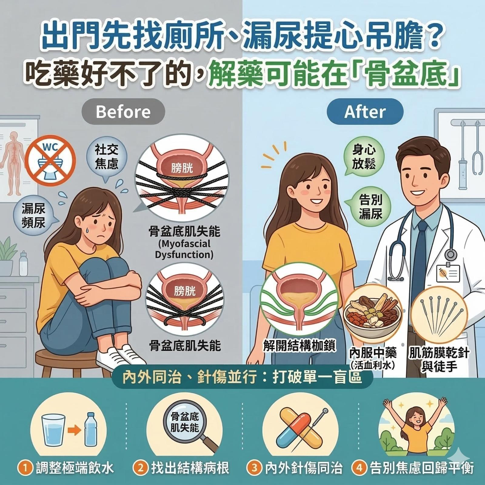

出門先找廁所、打噴嚏提心吊膽？吃藥好不了的頻尿與漏尿，解藥可能藏在「骨盆底」
【 出門先找廁所、打噴嚏提心吊膽？吃藥好不了的頻尿與漏尿，解藥可能藏在「骨盆底」 】
「醫師，我真的好焦慮，連出門都覺得有壓力......」
近日診間來了一位年輕女性。這三、四年來，她飽受泌尿系統問題折磨。故事的起點，是在幾年前一次免疫系統波動（打完疫苗後）引發的反覆泌尿道發炎。那陣子，該吃的抗生素沒少過，但發炎卻漸漸從急性轉為慢性，最後甚至演變成難以控制的「頻尿」與「漏尿」。
最終，她在泌尿科得到了一個診斷：膀胱過動症。
長期的折磨與難以啟齒的社交焦慮，讓她的身心都處於極度緊繃的狀態。除了頻繁的心悸，連腸胃系統也跟著罷工，時常腹瀉與軟便交替。
－
💧 第一個解謎：加重膀胱負擔的「極端飲食法」
在詳細的問診中，我發現了隱藏在生活中的致命盲點。
她這些年正在執行一套特定的飲食法，除了攝取大量蛋白粉，每天還被要求必須喝下 4000 到 6000cc 的大量水分。
「為了喝到這個量，我每天都覺得好有壓力、好不舒服。」她無奈地說。
對於一個健康的泌尿系統，多喝水或許是好事。但對於一個反覆發炎、處於「極度敏感狀態」的膀胱來說，強迫灌入巨量水分無疑是雪上加霜。這不僅無情地撐大受傷的膀胱，更讓底下的肌肉被迫「超時加班」憋尿。首要的第一步，就是請她立刻暫停這套飲食法，回歸正常、無壓力的飲食與水分攝取。
－
🔍 第二個解謎：脈象透露的「結構失能」
解決了喝水的盲點，接下來要找出病根。
透過中醫脈象診察，除了針對疫苗後遺症三角肌的處理，也發現她的「雙尺脈」呈現微弱、卻又「沉中帶弦緊」的特質。這在臨床上，是一個非常明確的結構訊號——她的『骨盆底肌群』出問題了。
這其實是很常見的因果關係：慢性泌尿道發炎後，骨盆底肌肉會因為長期疼痛與刺激，產生防禦性的緊縮。久而久之，肌肉失去了該有的彈性與功能，形成「肌筋膜失能 (Myofascial Dysfunction)」。
這就像是裝水的水球（膀胱），被一張緊繃、失去彈性的硬網（骨盆底肌）死死勒住。這時候，單吃內科藥物往往效果有限，因為「結構的物理張力」並沒有被解除。
－
✨ 內針傷同治：溫柔解開深層的隱形枷鎖
面對骨盆底失能，最直接的作法是針對盆底肌群進行乾針治療。但考量到初診的緊張與心理壓力，討論後，選擇了循序漸進的策略：
1. 結構端（肌筋膜乾針與徒手）： 我們先避開最敏感的區域，針對外圍的臀大肌、梨狀肌做治療，再盡可能逼近骨盆底的張力帶。
治療當下，她有些驚訝地反饋：「感覺屁股底下比較鬆開了，不像以前總有一種緊繃、一直拉扯著的感覺。」
2. 內科端（中藥內服）： 處方以「活血利水」為主，增強下焦與骨盆腔的氣血循環，加速發炎物質代謝。
隔週回診時，她帶來了令人振奮的消息：漏尿頻率大幅降低，對骨盆底的控制能力也明顯進步。於是打鐵趁熱，趁勝追擊，針對影響泌尿系統的內收肌群、髖關節深層肌群、，做了更全盤的肌筋膜乾針治療。
－
👨⚕️ 醫師的真心話
到了最近一次回診，她說話的語氣穩了，焦慮感大幅降低。頻尿感幾乎消失，漏尿的量也微乎其微。她開心地表示，整體狀況改善了一半以上，終於能安穩地睡個好覺了。
人體是一個完整的精密系統。很多時候，看似純內科的難解疾病，背後其實藏著肌筋膜與結構的失能。透過「內外同治、針傷並行」，打破單一視角的盲區，身體自然會找到回歸平衡的出路。
#骨盆底肌失能 #膀胱過動症 #頻尿 #漏尿 #喝水迷思 #肌筋膜乾針 #中西醫結合 #結構治療 #中醫徒手 #中醫傷科 #內針傷同治
---
🔎 實證醫學與延伸閱讀 (References)：
1. Weiss, J. M. (2001). Pelvic floor myofascial trigger points: manual therapy for interstitial cystitis and the urgency-frequency syndrome. The Journal of Urology.
(研究指出：針對骨盆底肌筋膜激痛點進行物理性放鬆，能顯著改善間質性膀胱炎與頻尿/急尿症候群的症狀。)
2. Itza, F., et al. (2010). Myofascial pain syndrome in the pelvic floor: a common urological condition. Acta Urológica Española.
(文獻闡明：骨盆底肌筋膜疼痛症候群常被誤診為單純的泌尿科或婦科疾病。透過解除閉孔內肌、提肛肌與周邊關節肌群的緊繃，能有效恢復盆底功能並改善下泌尿道症狀。)
【 ⚠️ 免責聲明與就醫提醒 】
本文所分享之臨床案例皆已進行去識別化與隱私保護處理，內容僅供醫療衛教觀念交流與參考。每位患者的體質、疾病進程與病因皆屬獨特個案，治療效果因人而異。若您有反覆泌尿道不適、漏尿或骨盆腔疼痛等症狀，請務必尋求受過正規訓練之專業醫師進行當面評估，切勿自行診斷或聽信偏方。
太初中醫診所 東門中醫
肌筋膜脈學中醫應用
中醫師 黃彥鈞
